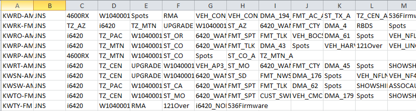
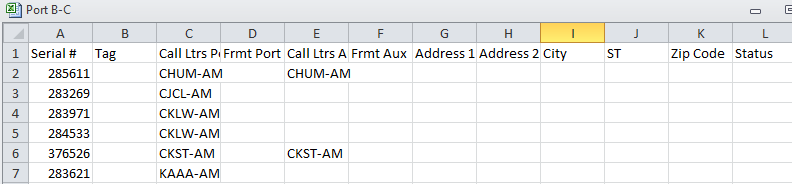

Wegener Export Procedure
Prior to Export
There are required Wegener import files that are used to proof the region definition prior generating it to the export file. Before you run the Wegener Export in Counterpoint, these files must be transferred from the Wegener system into the CSI\Prod\Import folder.
These files are the station and their ‘port’ definitions that Wegener has defined. Three of the four files are automatically generated via the Compel system every 15 minutes.
The files are:
- RX_Calls.csv (for Port D exports only)
- JNS_RecGroup.csv
- JNS_RecSerialNum.csv
- PORT B-C.csv (generated on demand)
The RX_Calls.csv , JNS_RecGroup.CSV and JNS_RecSerialNum.CSV files are generated by Wegener-Compel every 15 minutes. The Port B-C.CSV, is generated on demand by the user.
The RX_Calls.csv file contains the stations’ call letters, their port information (this is the only file that supports Port D) and their serial numbers. If using Port D, this file replaces the JNS_RecSerialNum and PORT B-C.csv files. When running the export, the system will first check the RX_Calls.csv file for matching call letters, and if they are not found on that file, it will search the other two files.
File Specifics
The JNS_RecGroup file contains station information from the Compel system. JNS stands for Jones.

Column A is the call letters, followed by time zone, DMA, format, etc., followed by vehicle information.
There are three different ports: A, B, and C. The system will be looking for vehicle names with a port number on it, such as VEH_MRN_A. If a vehicle has no port specified on it - for example, you might see VEH_MRN - it will be ignored.
JNS_RecSerialNum lists the call letters and serial numbers for Port A only.
Port B-C lists the serial numbers and call letters for Port B and C. Some of the serial numbers on this file might have multiple stations. These serial numbers are unique identifiers for the call letters to link the info back to the Compel system.

Export Steps
- Generate Logs in the Counterpoint Traffic System to update the affiliate system
- Import three Wegener files into the Counterpoint Affiliate System, and store in the CSI\Prod\Import folder.
- Generate the Wegener Export from the Counterpoint Affiliate System
- Import the ISCI Export into the Compel System
- The export is located in CSI\Prod\Export folder, or whatever export subfolder has been defined
Running the Export
- Only vehicles defined as Wegener vehicles will appear in the selection list
- Multiple vehicles can be selected
- Separate export files are produced for each vehicle
- Any information shown in the Results box is logged into the WegenerExport.txt and is stored in the csi\prod\data\messages folder
- The export is generated for one day at a time
- Station Info Path: The file path where the Wegener Compel import files must be defined. These files are used to flag stations that are using Wegener and to map stations to the correct receiver port
- Generate Wegener Export: Generates the file to be sent to Wegener and activates the “Generate CSV file along with the XML file” option
- Generate CSV file along with the XML file: The purpose of this file is for troubleshooting to see what information was sent to the Wegener system. This file will get created in the export folder
- Run Letter: This is the last character in the Wegener file name. This allows multiple runs to be distinguished from one another
- When “Generate CSV file along with the XML file” is checked, the Browse button is activated in the ‘Export to Folder’, allowing you to change the default export folder (as defined in the XML.ini Wegener section Export path or in the Affiliat.ini)
Export Files
Playlist Schedule
The file name is PLSched_Vehicle Export ID_WWYY_Run Letter.
Example: PLSched_323_3010_A.xml
PLSched- Play Schedule (Hard Coded)
Vehicle Export ID- In this example, the Export ID is 323. This comes from Wegener.
WWYY- Week #, in this example 30 and last two digits of the year, in this example 10
Run Letter- In this example A. If generated a second time, the run letter will be B, and so on.
If the vehicle is a Sports vehicle the game number is listed between the year and the Run Letter.
Example: PLSched_373_3010_117_A.xml
Playlist Schedule Contents
The Playlist Schedule file has two parts:
Part one is the General copy to be aired:
<Playlist_Set>
<Address>VEH_WG99</Address>
<Vehicle_Name>Weg/OLA</Vehicle_Name>
<Vehicle_Code>WG99</Vehicle_Code>
<Day_of_Week>MO</Day_of_Week>
<Playlist_Info Id="44400001">
<Break_Number>1</Break_Number>
<File_Path>/Assets/Spots/BIG WEG-OLA ISCI.MP2</File_Path>
</Playlist_Info>
<Playlist_Info Id="44400002">
<Break_Number>2</Break_Number>
<File_Path>/Assets/Spots/SN FDC30-2812R.MP2</File_Path>
</Playlist_Info>
Each break shows which ISCI code to run.
Part two is the Regional copy to be aired in each break:
<Playlist_Sched>
<Address>VEH_WG99^fmt_7^tz_PST</Address>
<Vehicle_Name>Weg/OLA</Vehicle_Name>
<Vehicle_Code>WG99</Vehicle_Code>
<Day_of_Week>MO</Day_of_Week>
<Playlist_Info Id="44400006">
<Break_Number>1</Break_Number>
<File_Path>/Assets/Spots/REG1-ISCI1.MP2</File_Path>
</Playlist_Info>
</Playlist_Sched>
All spots within any break that has Region copy will be exported. Region definitions that don’t have any associated stations will not be generated.
Group Member
The file name is GRPMBR_ Vehicle Export ID_WWYY_Run Letter.
Example: GRPMBR_323_3010_A.xml
GRPMBR- Group Member (Hard Coded)
Vehicle Export ID- In this example, the Export ID is 323. This comes from Wegener.
WWYY- Week #, in this example 30 and last two digits of the year, in this example 10
Run Letter- In this example A. If generated a second time, the run letter will be B, and so on.
Group Member Contents
The Group Member file contains all group name combinations that exceeds 58 characters in length. They are broken up so that no address name exceeds 58 characters.
<Group_Member>
<Group_Name>W4400001</Group_Name>
<Assignment_Method>Complete</Assignment_Method>
<Compel_Addr>Fmt_32^Tz_33^St_CA</Compel_Addr>
</Group_Member>
Export File
The Export to Wegener file is generated by vehicle with break numbers determined dynamically as all vehicle spots are converted to Eastern Time zone.
The files are stored in the Export folder defined in the XML.INI.
Example: Export = \csi\prod\XML_Exports\Wegner_XML Exports.
These files are overwritten with each export.